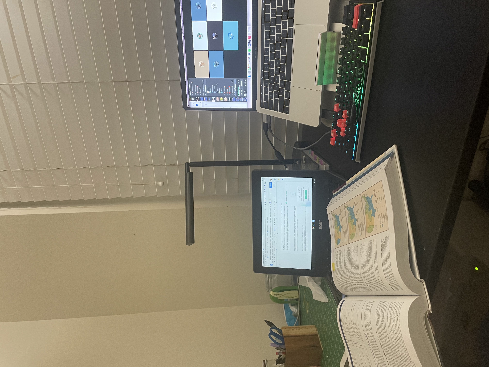
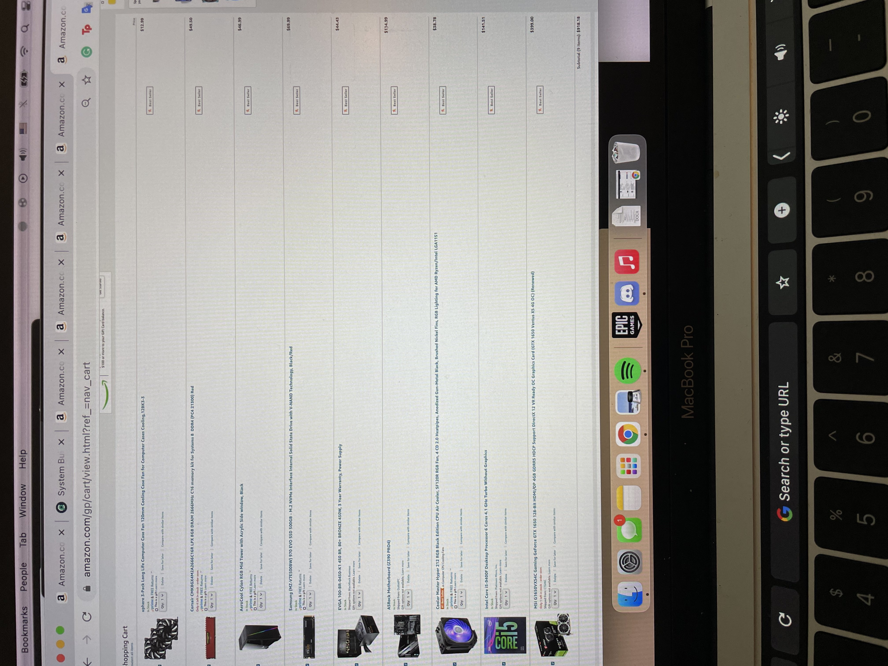
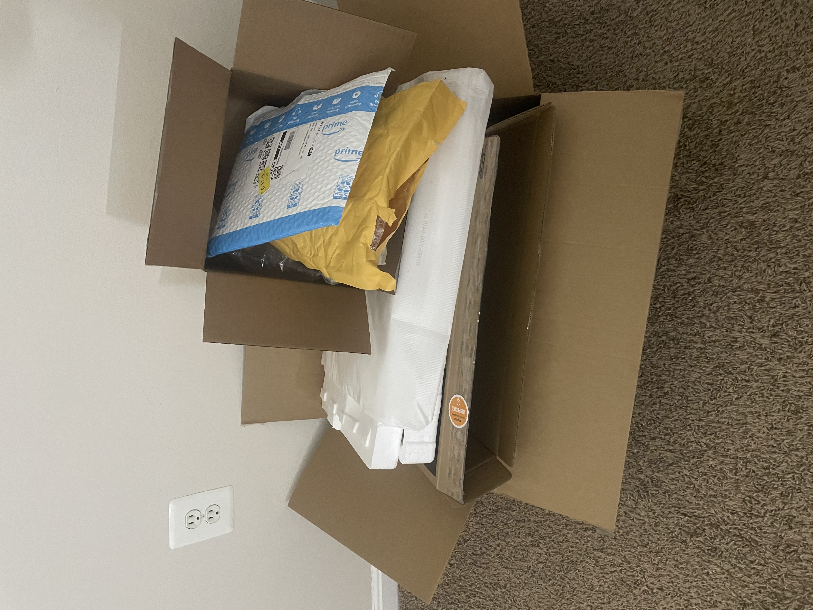
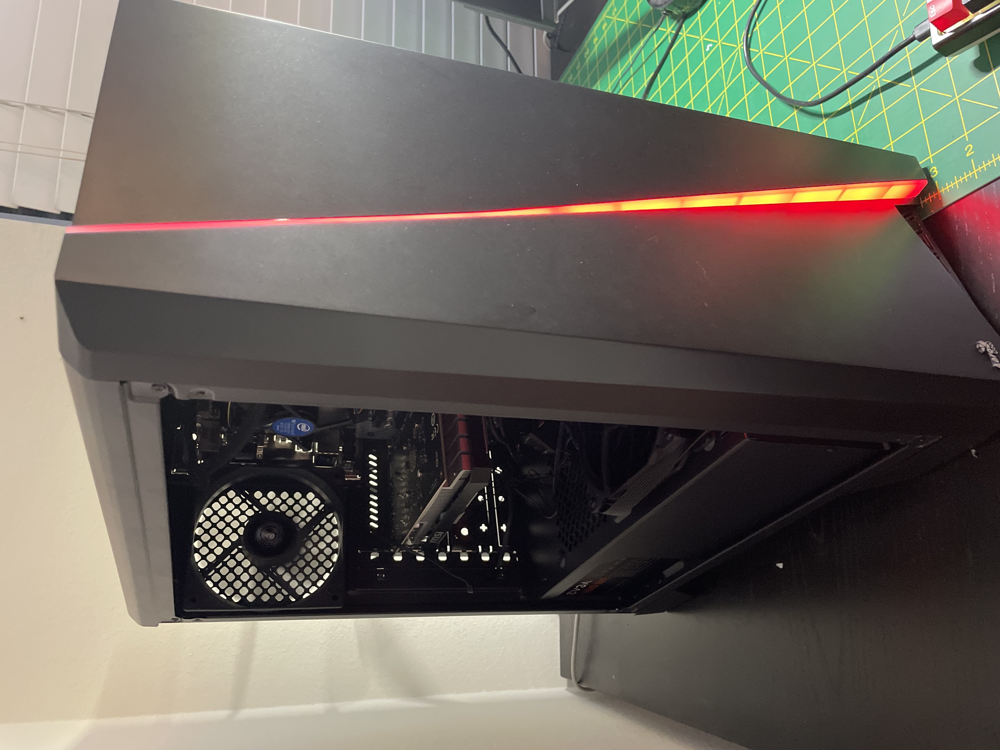
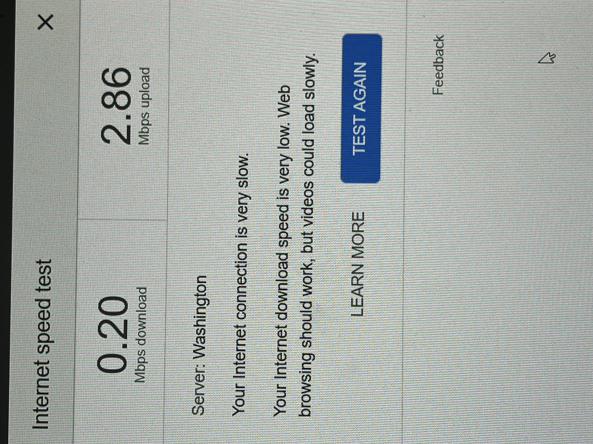
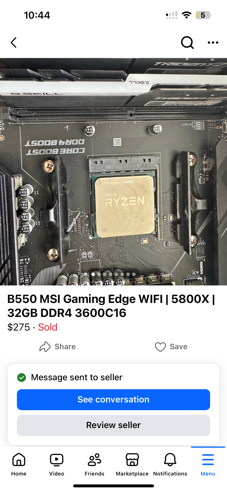
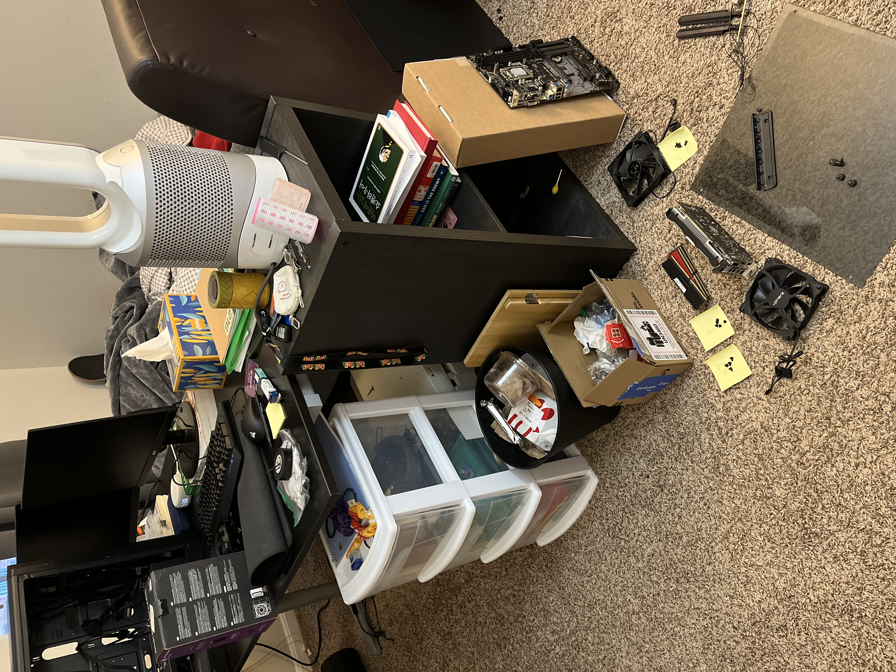
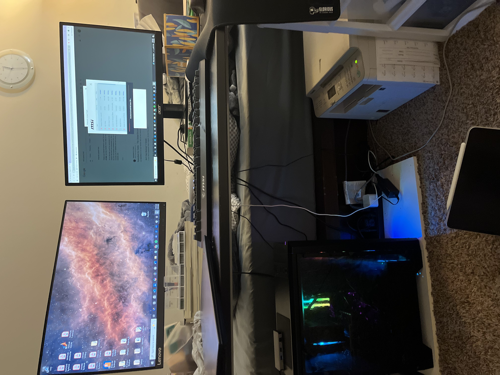
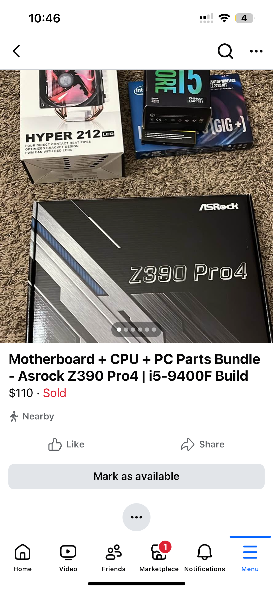

PC Upgrade [2025]
TL;DR
Built my first PC in 2021 for $918, used it heavily for 4+ years until WiFi and performance issues emerged. Upgraded the core components (motherboard, CPU, RAM) via Facebook Marketplace for $140 net cost, transforming it into a faster RGB build in just one day.
The Beginning: First Desktop Adventure
After years of relying solely on laptops, I finally decided to make the leap to desktop computing. On March 7, 2021, I took the plunge and ordered parts for my very first PC build.
The initial build was modest—totaling $918.18 before tax—but it represented something significant: my transition from portable computing to a dedicated workspace.
The Learning Curve
The components arrived gradually over the course of a week, and when the final box was delivered, the real adventure began. Armed with countless YouTube tutorials and a healthy dose of determination, I embarked on my first PC assembly.
What I expected to be a straightforward afternoon project stretched into two full days. Between figuring out cable management, ensuring proper component seating, getting the system to POST, and installing Windows, the learning curve was steeper than anticipated. But when those first LEDs lit up and the system successfully booted, the satisfaction was unmatched.
Four Years of Faithful Service
That humble build served me incredibly well. Over the next four years, it became my entertainment hub for dozens of Netflix series, my gaming rig for several hundred hours of gameplay, and my development workstation where I wrote thousands of lines of code. It was the reliable foundation of my digital life.
Signs of Age
By May 23rd, 2025, after more than four years of faithful service, the system began showing its age. Performance had noticeably declined, but the real pain point was the WiFi card—internet speeds had degraded significantly, impacting everything from streaming to file downloads.
Rather than simply replacing the WiFi card, I saw an opportunity for a more comprehensive upgrade that would breathe new life into the entire system.
The Smart Upgrade Strategy
This time around, I took a different approach. Instead of buying refurbished or brand new components from Amazon, I turned to Facebook Marketplace for better deals. I found an excellent bundle: an MSI B550 motherboard paired with a Ryzen 7 5800X CPU and two 8GB G.Skill DDR4 RAM sticks. I negotiated the $275 listing down to $250—a great deal for such a solid combo."
The Transformation
The upgrade process was a complete platform swap—out with the old ASRock Intel-based motherboard and in with the new MSI AMD setup. I replaced the non-RGB Corsair RAM with the RGB G.Skill modules and installed an RGB CPU cooler I had been keeping in storage, transforming not just the performance but the entire aesthetic of the build.
With four years of experience under my belt, what once took me two days now required only one. The familiarity with the process made everything smoother, from cable routing to component installation.
The Economics of Smart Upgrading
To offset the upgrade cost, I bundled all the replaced components—the old motherboard, CPU, CPU cooler, RAM, and problematic WiFi card—and sold them on Facebook Marketplace for $110.

- Total Investment Breakdown:
- New components: $250
- Sale of old parts: -$110
- Net upgrade cost: $140
The Results
The transformation was remarkable. The new system not only resolved the WiFi connectivity issues but delivered significantly improved performance across all tasks. The addition of RGB lighting gave it a fresh, modern appearance that matched its enhanced capabilities. Total time investment: approximately 12 hours spread across sourcing parts, performing the upgrade, and selling the old components. For $140 and one day of work, I essentially transformed my aging system into a modern, high-performance machine. The experience reinforced an important lesson: sometimes the smartest upgrade path isn't buying everything new, but strategically sourcing quality used components and maximizing the value of what you're replacing.
Back to Home